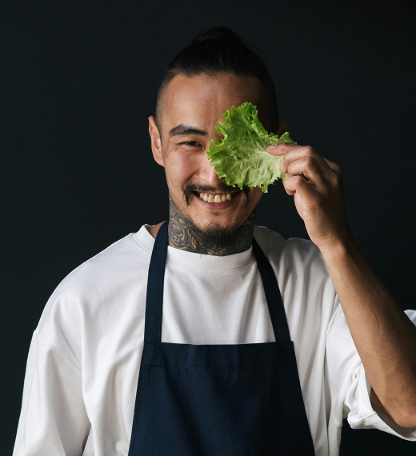

Sushi omakase revisité en "deux services"
Service 1 : Nigiri de saumon laqué au miso blanc (saumon mariné 48h
dans un mélange de miso blanc, mirin et saké, puis grillé légèrement
pour créer une croûte dorée).
Service 2 : Temaki de bœuf wagyu et champignons shiitake grillés
(bœuf wagyu coupé finement, champignons shiitake marinés au tamari,
enveloppé dans une feuille de nori et du riz vinaigré).
Accompagnement : Edamame croustillant (edamame sauté à l’huile de
sésame et sel marin, façon "tempura light").
Allergène
Gluten - Soja - Saumom - alcool - Sésame


Kenji Nakamura
Le chef Kenji Nakamura incarne une cuisine japonaise contemporaine, précise et élégante, où chaque détail compte. Reconnu pour son approche raffinée des produits frais et des saveurs umami, il mêle traditions culinaires japonaises et techniques modernes pour créer des expériences immersives et sensorielles.